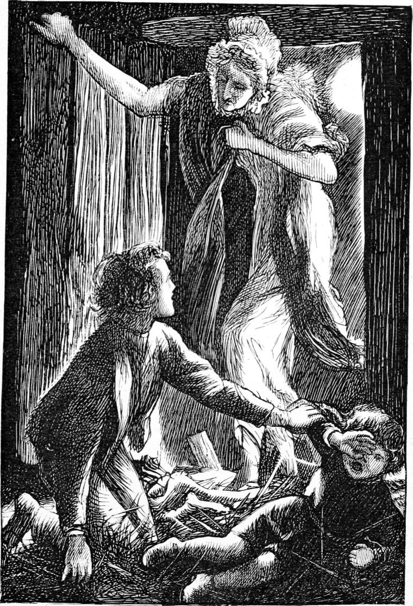

It must have been now about eleven o’clock. The clouds had cleared off, and the night had changed from brown and grey to blue sparkling with gold. I could see much better, and fancied I could hear better too. But neither advantage did much for me. I had not ridden far from the stable, before I again found myself very much alone and unprotected, with only the wide, silent fields about me, and the wider and more silent sky over my head. The fear began to return. I fancied something strange creeping along every ditch—something shapeless, but with a terrible cry in it. Next I thought I saw a scarcely visible form—now like a creature on all-fours, now like a man, far off, but coming rapidly towards me across the nearest field. It always vanished, however, before it came close. The worst of it was, that the faster I rode, the more frightened I became; for my speed seemed to draw the terrors the faster after me. Having discovered this, I changed my plan, and when I felt more frightened, drew rein and went slower. This was to throw a sort of defiance to the fear; and certainly as often as I did so it abated. Fear is a worse thing than danger.
I had to pass very nigh the pool to which Turkey and I had gone the night of our adventure with Bogbonny’s bull. That story was now far off in the past, but I did not relish the dull shine of the water in the hollow, notwithstanding. In fact I owed the greater part of the courage I possessed—and it was little enough for my needs—to Missy. I dared not have gone on my own two legs. It was not that I could so easily run away with four instead, but that somehow I was lifted above the ordinary level of fear by being upon her back. I think many men draw their courage out of their horses.
At length I came in sight of the keeper’s farm; and just at that moment the moon peeped from behind a hill, throwing as long shadows as the setting sun, but in the other direction. The shadows were very different too. Somehow they were liker to the light that made them than the sun-shadows are to the sunlight. Both the light and the shadows of the moon were strange and fearful to me. The sunlight and its shadows are all so strong and so real and so friendly, you seem to know all about them; they belong to your house, and they sweep all fear and dismay out of honest people’s hearts. But with the moon and its shadows it is very different indeed. The fact is, the moon is trying to do what she cannot do. She is trying to dispel a great sun-shadow—for the night is just the gathering into one mass of all the shadows of the sun. She is not able for this, for her light is not her own; it is second-hand from the sun himself; and her shadows therefore also are second-hand shadows, pieces cut out of the great sun-shadow, and coloured a little with the moon’s yellowness. If I were writing for grown people I should tell them that those who understand things because they think about them, and ask God to teach them, walk in the sunlight; and others, who take things because other people tell them so, are always walking in the strange moonlight, and are subject to no end of stumbles and terrors, for they hardly know light from darkness. Well, at first, the moon frightened me a little—she looked so knowing, and yet all she said round about me was so strange. But I rode quietly up to the back of the yard where the ricks stood, got off Missy and fastened the bridle to the gate, and walked across to the cart-shed, where the moon was shining upon the ladder leading up to the loft. I climbed the ladder, and after several failures succeeded in finding how the door was fastened. When I opened it, the moonlight got in before me, and poured all at once upon a heap of straw in the farthest corner, where Jamie was lying asleep with a rug over him. I crossed the floor, knelt down by him, and tried to wake him. This was not so easy. He was far too sound asleep to be troubled by the rats; for sleep is an armour—yes, a castle—against many enemies. I got hold of one of his hands, and in lifting it to pull him up found a cord tied to his wrist. I was indignant: they had actually manacled him like a thief! I gave the cord a great tug of anger, pulled out my knife, and cut it; then, hauling Jamie up, got him half-awake at last. He stared with fright first, and then began to cry. As soon as he was awake enough to know me, he stopped crying but not staring, and his eyes seemed to have nothing better than moonlight in them.
“Come along, Jamie,” I said. “I’m come to take you home.”
“I don’t want to go home,” said Jamie. “I want to go to sleep again.”
“That’s very ungrateful of you, Jamie,” I said, full of my own importance, “when I’ve come so far, and all at night too, to set you free.”
“I’m free enough,” said Jamie. “I had a better supper a great deal than I should have had at home. I don’t want to go before the morning.”
And he began to whimper again.
“Do you call this free?” I said, holding up his wrist where the remnant of the cord was hanging.
“Oh!” said Jamie, “that’s only—”
But ere he got farther the moonlight in the loft was darkened. I looked hurriedly towards the door. There stood the strangest figure, with the moon behind it. I thought at first it was the Kelpie come after me, for it was a tall woman. My heart gave a great jump up, but I swallowed it down. I would not disgrace myself before Jamie. It was not the Kelpie, however, but the keeper’s sister, the great, grim, gaunt woman I had seen at the table at supper. I will not attempt to describe her appearance. It was peculiar enough, for she had just got out of bed and thrown an old shawl about her. She was not pleasant to look at. I had myself raised the apparition, for, as Jamie explained to me afterwards, the cord which was tied to his wrist, instead of being meant to keep him a prisoner, was a device of her kindness to keep him from being too frightened. The other end had been tied to her wrist, that if anything happened he might pull her, and then she would come to him.

“What’s the matter, Jamie Duff?” she said in a gruff voice as she advanced along the stream of moonlight.
I stood up as bravely as I could.
“It’s only me, Miss Adam,” I said.
“And who are you?” she returned.
“Ranald Bannerman,” I answered.
“Oh!” she said in a puzzled tone. “What are you doing here at this time of the night?”
“I came to take Jamie home, but he won’t go.”
“You’re a silly boy to think my brother John would do him any harm,” she returned. “You’re comfortable enough, aren’t you, Jamie Duff?”
“Yes, thank you, ma’am, quite comfortable,” said Jamie, who was now wide-awake. “But, please ma’am, Ranald didn’t mean any harm.”
“He’s a housebreaker, though,” she rejoined with a grim chuckle; “and he’d better go home again as fast as he can. If John Adam should come out, I don’t exactly know what might happen. Or perhaps he’d like to stop and keep you company.”
“No, thank you, Miss Adam,” I said. “I will go home.”
“Come along, then, and let me shut the door after you.”
Somewhat nettled with Jamie Duff’s indifference to my well-meant exertions on his behalf, I followed her without even bidding him good night.
“Oh, you’ve got Missy, have you?” she said, spying her where she stood. “Would you like a drink of milk or a piece of oatcake before you go?”
“No, thank you,” I said. “I shall be glad to go to bed.”
“I should think so,” she answered. “Jamie is quite comfortable, I assure you; and I’ll take care he’s in time for school in the morning. There’s no harm in him, poor thing!”
She undid the bridle for me, helped me to mount in the kindest way, bade me good night, and stood looking after me till I was some distance off. I went home at a good gallop, took off the saddle and bridle and laid them in a cart in the shed, turned Missy loose into the stable, shut the door, and ran across the field to the manse, desiring nothing but bed.
When I came near the house from the back, I saw a figure entering the gate from the front. It was in the full light of the moon, which was now up a good way. Before it had reached the door I had got behind the next corner, and peeping round saw that my first impression was correct: it was the Kelpie. She entered, and closed the door behind her very softly. Afraid of being locked out, a danger which had scarcely occurred to me before, I hastened after her; but finding the door already fast, I called through the keyhole. She gave a cry of alarm, but presently opened the door, looking pale and frightened.
“What are you doing out of doors this time of the night?” she asked, but without quite her usual arrogance, for, although she tried to put it on, her voice trembled too much.
I retorted the question.
“What were you doing out yourself?” I said.
“Looking after you, of course.”
“That’s why you locked the door, I suppose—to keep me out.”
She had no answer ready, but looked as if she would have struck me.
“I shall let your father know of your goings on,” she said, recovering herself a little.
“You need not take the trouble. I shall tell him myself at breakfast to-morrow morning. I have nothing to hide. You had better tell him too.”
I said this not that I did not believe she had been out to look for me, but because I thought she had locked the door to annoy me, and I wanted to take my revenge in rudeness. For doors were seldom locked in the summer nights in that part of the country. She made me no reply, but turned and left me, not even shutting the door. I closed it, and went to bed weary enough.